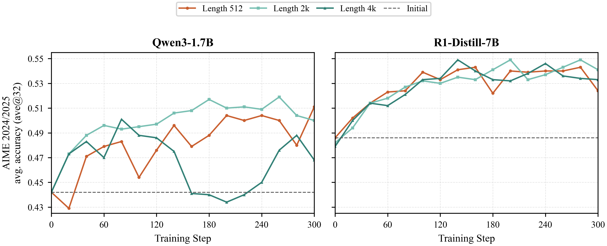
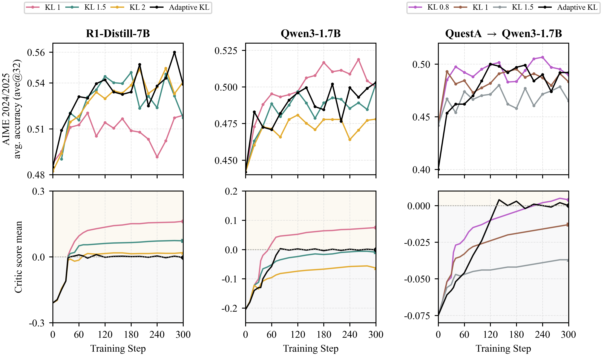

Weak-to-Strong Generalization
Weak-to-Strong Generalization via Direct On-Policy Distillation
Direct-OPD transfers a small teacher's RL-induced policy shift instead of imitating its endpoint policy. The result is dense token-level supervision that improves stronger students on their own on-policy states.
June 22, 2026

Citation
BibTeX
@misc{feng2026directopd,
title = {Weak-to-Strong Generalization via Direct On-Policy Distillation},
author = {Shiyuan Feng and Huan-ang Gao and Haohan Chi and Ya-Qin Zhang and Hao Zhou},
year = {2026}
}Core Mechanism
Transfer the policy shift, not the teacher ceiling.
The small teacher pair encodes the reward discovered by RL. Direct-OPD reads that reward as a log-ratio and applies it on the stronger student's sampled prefixes.
Pre-RL reference
Start from the small teacher before RL: pi_Tref.
pi_Tref
Post-RL teacher
RL moves the small model toward better reasoning behavior: pi_T.
pi_T
Dense implicit reward
Use log pi_T - log pi_Tref as a token-level direction for the strong student.
Delta_T
Endpoint OPD
Copies the weak teacher's final distribution.
Direct-OPD
Applies the teacher's RL direction to the strong student.
Why Standard OPD Fails
Endpoint imitation mixes two signals.
Vanilla OPD asks the student to match the post-RL teacher distribution. In weak-to-strong transfer, that distribution contains both the teacher's useful RL improvement and the teacher's smaller-model capacity limit. A stronger student can therefore be pulled down toward the weak teacher's ceiling.
What Direct-OPD Transfers
The teacher's RL-induced policy shift
Delta_T(y|x) = log pi_T(y|x) - log pi_Tref(y|x)
Direct-OPD subtracts the teacher's pre-RL reference from its post-RL checkpoint. This isolates what RL changed in the teacher and discards the teacher's absolute endpoint policy.
Training Objective
Dense reward on student-visited states
The student samples its own rollouts. At each visited prefix, Direct-OPD evaluates the teacher/reference log-ratio on the student's top-k candidate tokens, increasing probability on tokens the teacher's RL made more likely and decreasing probability on tokens it suppressed.
1
Sample from the student
Use on-policy prefixes from the current student, not teacher-generated trajectories.
2
Score top-k actions
Read log pi_T - log pi_Tref on the candidate tokens the student actually considers.
3
Update with a KL anchor
Keep the student near its initialization so the dense reward remains reliable.
Axis
OPD
Direct-OPD
Target
Teacher endpoint distribution
Teacher/reference policy shift
Signal
log pi_T - log pi_student
log pi_T - log pi_Tref
Weak-to-strong risk
Can import the weak teacher's capacity ceiling
Preserves the student's stronger base while transferring direction
Empirical Results
Weaker RL teachers improve stronger students.
Across JustRL and QuestA teacher pairs, Direct-OPD improves students from different model families, including students that already exceed the post-RL teacher.
Qwen3-1.7B
AIME2448.3 -> 62.4+14.1
AIME2536.8 -> 46.3+9.5
Qwen3-4B
AIME2472.5 -> 77.6+5.1
AIME2565.6 -> 68.8+3.2
R1-Distill-7B
AIME2456.7 -> 63.1+6.4
AIME2540.5 -> 48.8+8.3

Visual Demo
Results, compute, composition, and training dynamics.




Paper
Abstract and contributions
Abstract
Reinforcement learning with verifiable rewards improves reasoning but depends on sparse terminal rewards. Direct-OPD reuses a smaller post-RL teacher and its pre-RL reference to recover a dense token-level implicit reward, allowing a stronger student to improve on its own on-policy states without large-scale target-model RL.
Contributions
- A credit-assignment view of weak-to-strong transfer.
- Consistent gains across teacher pairs, students, and model families.
- Better compute tradeoff than direct large-model RL.
- Analysis of overlap, response length, and KL reliability.